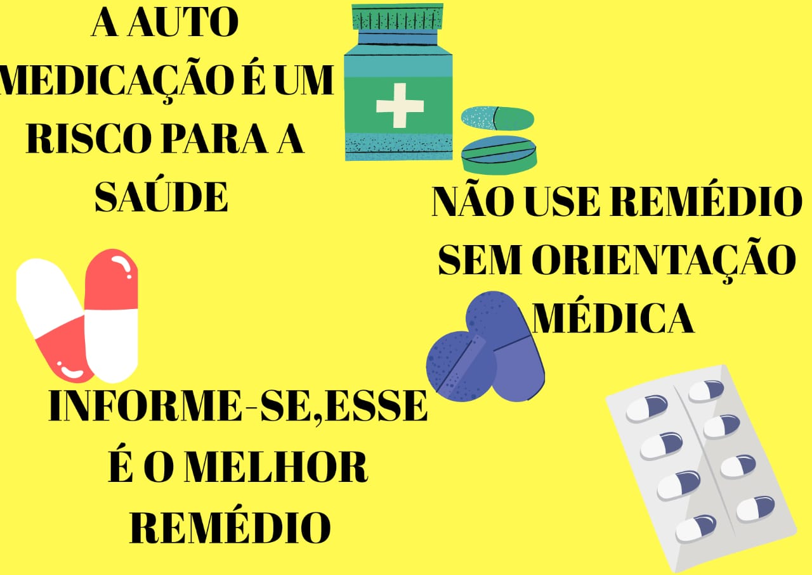

Automedicação, a grande vilã da sua saúde
Você sabia que a automedicação já se tornou um hábito frequente no Brasil?
Dados do Conselho Federal de Farmácia – CFF mostram que 77% dos brasileiros fazem uso de medicamentos sem qualquer orientação médica.
Pensando nisso, separamos algumas informações importantes para você. Confira os tópicos e aproveite a leitura!
Automedicação x Covid-19
Em meio a um dos maiores cenários pandêmicos, vimos com o disseminar do vírus uma grande enxurrada de notícias falsas. Notícias essas que influenciaram no aumento do consumo de alguns medicamentos.
A automedicação é vista para a maioria das pessoas como um alívio rápido para algum sintoma. Porém, o uso inadequado de alguns medicamentos pode esconder doenças mais graves, ou até mesmo piorar seus sintomas, podendo causar ainda alergias e dependência química. Sintomas comuns como dor de cabeça, febre, enxaqueca e ademais já são suficientes para que façamos o uso de medicamentos por conta própria.
Agora, façamos uma correlação a automedicação e pandemia. O medo se torna um ponta pé inicial para o uso de medicamentos em horários e posologias incorretas.
Sabemos que aliviar os sintomas com antitérmicos e analgésicos é mais fácil. Portanto, é importante deixar claro que os remédios para tosse e resfriado como por exemplo, apesar de parecerem inofensivos não são. Seu uso deve se restringir a prescrição médica ou farmacêutica. Se usado em doses excessivas por exemplo, podem causar complicações indesejáveis e irreversíveis.
As pílulas anticoncepcionais podem promover o ganho de peso? Mito. O hormônio contido na pílula deve ser determinado e orientado por um ginecologista para evitar exceder a contagem de hormônios. No entanto, em geral, não há evidências de que esse efeito esteja relacionado ao ganho de peso. Dependendo do hormônio usado, pode haver aumento da retenção de líquidos e inchaço. No entanto, isso não tem nada a ver com o aumento das células de gordura.
Lembramos; vermífugos, antivirais, coquetéis de vitaminas, principalmente vitamina C, que foi o auge da comercialização, não te tornarão imune.
É importante ressaltarmos que o uso desenfreado de vitamina C podem causar dores abdominais, diarreia, cálculos renais, distúrbios gastrointestinais e incomodo na bexiga. Sendo ainda que, pacientes diabéticos, hipertensos, com problemas renais e hepáticos devem redobrar o cuidado, devem fazer uso de vitaminas apenas com consentimento médico ou farmacêutico. É de suma importância desmistificarmos ainda o uso de anticoagulantes. O consumo dessa classe medicamentosa sem orientação pode levar a hemorragia interna, como sangramento gastrointestinal e no sistema nervoso central. Seu uso deve se restringir a prescrição médica ou somente em ambiente hospitalar. Observamos também o aumento no consumo de antitérmicos e analgésicos, tais como, paracetamol, dipirona e ibuprofeno. Dependendo da posologia administrada pela própria pessoa, o paracetamol pode causar hepatite toxica, a dipirona pode causar choque anafilático e o ibuprofeno pode causar tonturas e visão turva.
Outro agravante de importante atenção é o uso de antibióticos. O uso dessa classe medicamentosa atingiu altos níveis durante a pandemia. Sendo que, assim como os outros medicamentos, está sendo usado sem nenhuma comprovação cientifica. Porém, alertamos que o tratamento com esse fármaco deve se restringir a infecção bacteriana ou fúngica. Pois, já foi comprovada uma grande resistência bacteriana. Sendo que seu uso desenfreado dificultará mais tarde o tratamento de uma doença comum, como pneumonia ou infecção urinária.
Fique atento às notícias! Saiba que nenhum medicamento ou suplemento vai evitar o contágio! Não compre o que você não vai usar. Quando você retira do estoque demasiadas caixas que ficarão a vencer na prateleira você pode estar tirando de quem realmente precisa. Fique atento aos sintomas mais comuns: febre, tosse, dores no corpo, coriza, espirro e mal estar. Em caso de febre use apenas antitérmicos. Se agravarem os sintomas procure atendimento médico.
Eventos adversos
Dentre os fatores podemos citar dores de cabeça, enxaquecas crônicas, alergias e ademais, que se apresentam de forma recorrente, fazendo com que o paciente se automedique.
Entretanto, apesar da facilidade de se automedicar, deve-se ter sempre atenção com o uso de remédios.
O uso de medicamentos sem prescrição médica pode causar diversos problemas, sendo um deles a intoxicação. A falta de conhecimento a respeito de um medicamento pode também levar ao uso de substâncias que causam alergia. Algumas reações alérgicas podem ser graves e desencadear até mesmo a morte.
O uso de medicamentos por conta própria pode causar uma melhora falsa nos sintomas. Apesar de aliviar os problemas imediatos, o medicamento pode apenas mascarar a doença, causando um agravamento no caso e dificultando um diagnóstico por parte dos profissionais da área.
A combinação de medicamentos também é um grave problema. Muitas pessoas não sabem que um remédio pode anular o efeito de outro e acabam fazendo combinações inadequadas que podem ocasionar problemas cada vez maiores.
Esse momento de conversa é a hora certa que você pode retirar quaisquer dúvidas existentes. É a hora certa para informar ao profissional problemas que você já teve, reações alérgicas e ademais. Informe quanto a:
- Algum outro medicamento que você esteja utilizando. A fim de evitar interações medicamentosas.
- Reações anteriores a algum medicamento. Rubor, dor de cabeça, enjoo, tontura, mal-estar, vomito, diarreia, manchas na pele e ademais.
- Alergia quanto a algum fármaco.
- Informe quanto ao seu histórico clínico familiar. Se existe alguém da família com alguma doença genética ou hereditária.
- Informe seus diagnósticos anteriores. Se possui alguma doença ou se já teve alguma de grande importância.
- Não esconda nenhuma informação. Quando mentimos sobre algum sintoma fazemos com que o médico receite algo que não precisamos. Seja honesto consigo mesmo.
- Uso de cigarros ou bebida alcoólica com frequência.
- Dificuldade para leitura ou para diferenciar o remédio ( para que não tome o mesmo mais de uma vez ou deixe de utilizar algum ).
- Quanto a possíveis efeitos que o medicamento causa, como dor de cabeça por exemplo. A fim de evitar pânico.

Conheça a Cannabis sativa de um jeito diferente
Um olhar de aplicações clínicas e efeitos benéficos ao paciente

Os paradigmas dos anticoncepcionais
Entenda de uma vez todos os mitos e as verdades importantes desta medicação

Descubra a automedicação autoconsciente
Saiba a hora certa e como fazer com segurança